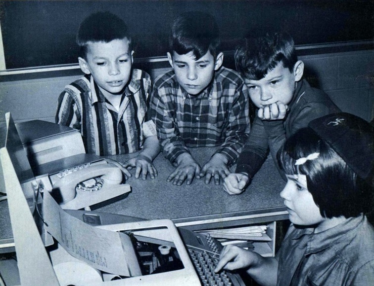
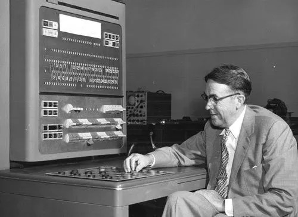
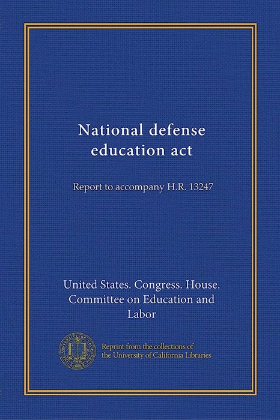

Keeping People in Computing
The idea of people being front-and-center of computation, and thus technology, once held sway but has often been in danger from a wider technocracy. Here I want to focus on what "people's computing" in the broad strokes was.
An Implied Ontology
The concept of "people's computing" as an implied ontology, rather than a concrete historical era, introduces a specific perspective. Ontologically, it suggests that the categorization of a specific period as "people's computing" is a construct that we apply retrospectively to encapsulate a set of shared values, practices, and attitudes.
By acknowledging the constructed nature of this era, I mean to explicitly highlight the interpretive aspect of historical demarcation. It's not a predefined, objectively existing period, but rather a lens through which we choose to view and define a particular slice of time. This approach aligns with the understanding that historical narratives are shaped by the storytellers, and the identification of distinct eras involves a certain level of subjectivity and interpretation.
So my emphasis on the implied ontology is hopefully prompting my readers to consider the fluidity of historical categorizations and the importance of recognizing our role in shaping the narrative. What I hope is that this provides a nuanced perspective that encourages a critical reflection on how we conceptualize and frame historical periods, particularly in the realm of technology and computing.
My focus on "people's computing" and the shift from a time when individuals were at the forefront of computation to the potential overshadowing by a broader technocracy is, I hope, a compelling and relevant narrative thread. It speaks to the changing dynamics in the relationship between people and technology over time.
The notion of "people's computing" — during the 1965 to 1975 period — championed by groups like the People's Computer Center and figures like Bob Albrecht, serves as a poignant reminder of a time when the democratization of technology was a driving force. It reflects a period when individuals, particularly students, were actively engaged in computing, using tools like BASIC to demystify and make technology accessible.
My intention to delve into what "people's computing" was in broad strokes is meant to suggest an exploration of the ethos and principles that characterized this era. My hope is that this approach not only captures a historical moment but also sets the stage for reflecting on the implications of a potential shift towards a more technocratic perspective.
The Crucial Intersection
The reason for much of my Ludic Historian content is that I've done a lot of research into gaming history, particularly around the distinctions of ludology and narratology. As I embarked on a lot of that research, I found an interesting starting point around where computing and education intersected.
Here we a young High School student in 1962:

Here we have a set of younger children in 1967:
This intersection provided a very fertile ground for the development of computer games and also artificial intelligence, the latter of which was often used with and against the former to determine its viability and actuality.
Here, by way of example, we have Arthur Samuel, in 1959, who published an algorithm for a checkers program using artificial intelligence.
What I think is very interesting is that while gaming saw a great deal of experimentation because it became democratized — due to the democratization of computing — there was less of this with artificial intelligence. The latter was not as democratized and thus the experimentation was confined to researchers or academics.
Thus people, in the broad sense, were front-and-center with gaming-as-computation and very much in the background with AI-as-computation. How ludology and narratology influenced that, even though the terms themselves were not yet in use, is something best covered by example. Here, however, I want to dig into a little history and look at how humans and technology intersected at some pivotal moments.
A Historical Pivot Point
A very key moment in the microelectronic revolution, which eventually led to computing becoming accessible to many people, was the launch of the Sputnik satellite on 4 October 1957 by the Soviet Union.

In the United States, the launch of Sputnik provided the impetus for administrators and educators to reconsider American education as a whole.
It was felt a "space race" was coming — in fact, a technology race — and thus American education had to prepare its youth for that. Better schooling was required, particularly around math and science.
Computing in Education
In September 1958, the United States Congress passed the National Defense Education Act.
Not exactly riveting reading, I can assure you, but it provided funds to improve teaching, with an emphasis on teaching science and mathematics. The federal government thus made money available for "innovative approaches" to education. A primary focus of innovation in this context was using technology in the classroom.
Money supplied by the government, as well as private institutions like the Carnegie and Ford Foundations, made it possible during the early 1960s for schools to experiment with new and innovative educational methods around technology.
This impetus for adding technology into schools, not surprisingly, had a direct impact on the history of computing.